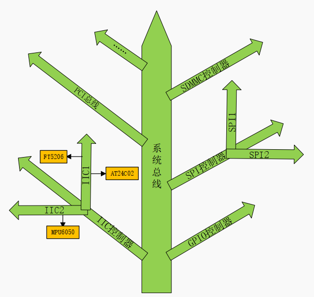

04 设备树
设备树
设备树的定义
设备树是用来以树形结构描述开发板板级逻辑（比如CPU数量、内存基地址、IIC上挂了什么设备…）的文件
- 设备树的意义：引入一个单独的文件描述板级信息，解耦板级信息和驱动，增加驱动代码的通用型
举个例子，我有2个板子，第一个板子的MPU6050接在i2c1上，第二个板子的6050接在i2c2上，如果我不用设备树的话，我就得在驱动程序里写一堆寄存器的地址；且不同的板子的驱动程序应该不同。但我如果用了设备树，就可以把寄存器相关的信息写在设备树里，然后驱动直接根据去设备树里找MPU6050节点里的地址就行了（相当于实现了动态修改硬件设别的寄存器地址），不同的板子可以共用驱动程序（内核），只需修改设备树文件
设备树语法
正如其名字，设备树是个树形结构，每个硬件都是树中的一个节点，不能在设备树中写孤立的语法。同时，如果.dtsi和.dts中都定义了根节点，则该根节点会合并为一个
此外，所有设备都嵌套在根节点/{}下，我们往设备树中添加新设备时，应该找到其最近的控制器，作为其父节点（比如MPU6050节点就应该作为某个i2c控制器节点的子节点），因为可能要复用父节点中的一些属性
但是不是任何情况下新设备都需要作为某个设备的子节点，只要能通过某种方式引用到所需要的父节点中的一些属性，就不要作为子节点了，比如：
1 | / { |
虽然leds是挂载在gpio0上的，但是它可以通过&gpio0访问到父节点中的一些属性，所以就不需要嵌套在gpio0中
对其他文件的引用
设备树源码可以像C语言一样#include来引用其他文件，具体可以引用.h、.dtsi、.dts文件
设备节点
设备树是采用树形结构描述板子上的设备信息的文件，每个设备都是一个节点，叫作设备节点，每个设备节点都通过属性（键值对）来描述节点信息。
节点的命名
设备节点的命名方式如下：
1 | label: node-name@unit-address{ |
label是节点标签，可以通过&label方便的访问到某个设备节点，而不需要再用node-name@unit-address来访问了
节点的属性
节点的属性都为键值对，其中值可以为空和任意字节流，常见的几种形式如下：
1.字符串
1 | compatible = "arm,cortex-a7"; |
2.32位无符号整形
1 | reg = <0>; |
3.一组32位无符号整形
1 | reg = <0 0x123456 100>; |
4.字符串列表
1 | compatible = "fsl,imx6ull-gpmi-nand", "fsl, imx6ul-gpmi-nand"; |
标准属性
每一个节点都是由若干属性组成，不同的设备节点可能有不同的属性，但是有一些属性许多设备节点都会用到，这些属性被称为标准属性
设备节点标识属性
这些属性用于唯一标识一个节点，并告诉内核它是什么设备
| 属性名 | 作用 | 值类型 | 示例 | 必须？ |
|---|---|---|---|---|
compatible |
最重要的属性。用于将设备节点与内核中的驱动程序绑定。内核驱动程序会声明自己支持的compatible字符串，两者匹配时驱动才会初始化此设备 |
<string> |
"microchip,24c02" |
是 |
reg |
定义设备在其父总线地址空间内的地址。对于I²C设备，通常是设备地址。对于内存映射设备，是地址和长度 | <prop-encoded-array> |
reg = <0x50>; (I²C地址) reg = <0x02000000 0x1000>; (地址0x02000000, 长度0x1000) |
是 |
status |
设备的状态，决定是否启用该设备 | <string> |
"okay" (启用) "disabled" (禁用) "fail" (失败，表示设备存在但无法工作) |
否 |
model |
设备的型号/模型名称，通常是人类可读的描述 | <string> |
model = "Raspberry Pi 4 Model B"; |
否 |
name |
设备节点的名称（已过时，通常由节点名label代替） |
<string> |
(不推荐使用) | 否 |
compatible属性：用于在Linux内核中匹配此设备所使用的驱动程序，它的值是字符串，格式如下：
1 | compatible = "manufacturer,model" |
其中 manufacturer 表示厂商,``model` 一般是模块对应的驱动名字 ，比如
1 | compatible = "fsl,imx6ul-evk-wm8960","fsl,imx-audio-wm8960"; |
imx6ul-evk-wm8960和imx-audio-wm8960为驱动的名字，在使用该设备时，会到Linux内核中查找与之匹配的驱动文件。
驱动的基类
struct device_driver有个成员变量of_match_table，保存着一些 compatible 值，如果设备节点的 compatible 属性值和 其中的任何一个值相等，那么就表示设备可以使用这个驱动
除了普通的设备节点，根节点也有compatible属性，且子节点的compatible属性在设备树中具有不同的作用和含义：
- 根节点的
compatible属性用于设备树文件的兼容性，用于与引导加载程序(U-Boot)匹配确定加载哪个设备树文件。 - 子节点的
compatible属性用于设备的兼容性，用于与驱动程序匹配确定加载哪个驱动程序。
中断、时钟、引脚控制属性
这些属性描述设备如何与SoC的其他部分连接，是驱动正确操作设备的关键。
| 属性名 | 作用 | 值类型 | 示例 | 必须？ |
|---|---|---|---|---|
interrupts |
指定设备使用的一个或多个中断号 | <prop-encoded-array> |
interrupts = <0 10 4>; (中断号10, 高电平触发) |
如果设备使用中断 |
interrupt-parent |
指定设备的中断由哪个中断控制器处理。如果省略，则继承父节点的中断控制器 | <phandle> |
interrupt-parent = <&intc>; |
否 |
clocks |
指定设备使用的一个或多个时钟源 | <phandle> |
clocks = <&clk 1>; |
如果设备需要时钟 |
clock-names |
为每个时钟源分配一个名字，方便驱动通过名字获取特定时钟 | <string> |
clock-names = "axi", "spi"; |
否 |
pinctrl-0 |
指定设备要使用的引脚复用（Pinmux）和配置（如上拉、下拉、驱动强度） | <phandle> |
pinctrl-0 = <&i2c1_pins>; |
如果设备需要配置引脚 |
pinctrl-names |
为引脚控制状态命名，通常默认状态名为"default" |
<string> |
pinctrl-names = "default"; |
否 |
GPIO、DMA、电源管理属性
| 属性名 | 作用 | 值类型 | 示例 | 必须？ |
|---|---|---|---|---|
gpios |
指定设备使用的GPIO引脚。驱动可以通过此属性请求和控制GPIO | <phandle> |
gpios = <&gpio 10 0>; (使用GPIO10, 低电平有效) |
如果设备使用GPIO |
dmas |
指定设备使用的DMA通道 | <phandle> |
dmas = <&dma 5>; |
如果设备使用DMA |
dma-names |
为DMA通道命名，如"tx", "rx" |
<string> |
dma-names = "tx"; |
否 |
vmmc-supply vin-supply 等 |
指定设备的电源调节器（Regulator）。驱动通过此属性获取并控制设备的电源 | <phandle> |
vmmc-supply = <&vcc_3v3>; |
如果设备有独立电源 |
总线相关属性
| 属性名 | 作用 | 值类型 | 示例 | 必须？ |
|---|---|---|---|---|
#address-cells |
在当前节点子节点的reg属性中，地址部分占用几个32位字（cell） |
<u32> |
#address-cells = <1>; |
是 (在总线节点) |
#size-cells |
在当前节点子节点的reg属性中，长度部分占用几个32位字（cell）。0表示没有长度字段 |
<u32> |
#size-cells = <0>; (I²C设备无长度) |
是 (在总线节点) |
别名和引用
| 属性名 | 作用 | 值类型 | 示例 |
|---|---|---|---|
phandle |
节点的唯一标识符，允许其他节点通过&label引用它。通常由编译器自动生成，无需手动添加。 |
<u32> |
(自动生成) |
label (节点名前的) |
节点的标签，用于在其他地方通过&label来引用该节点 |
(节点标识符) | i2c1: i2c@... (&i2c1即可引用) |
在知道了设备树有这么多属性之后，难免会有一个疑问：我怎么知道绑定某设备时创建的节点需要哪些属性？比如我要新加个MPU6050，我该在i2c节点下新增什么信息呢？
SoC厂商会给一个文档，告诉我们在新增一个设备节点时，应该写哪些属性。此文档在内核的
Documentation/devicetree/bindings下，里面有不同的SoC对于某个外设应该如何写设备树文件
向节点追加内容
在实际使用设备树时，可能出现以下场景：我们自己的板子的i2c中新挂载了一个MPU6050，所以需要修改这个节点，但是由于i2c节点定义在.dtsi文件中，直接修改该文件的话会影响所有引用此文件的设备。因此需要新建一个.dts文件，并在该文件中像iic节点追加内容。
追加内容的语法如下：
1 | &i2c1{ |
即使用节点命名提到的&label来访问就可以了，并且如果有些属性之前被定义了，此处可以进行修改
设备树的解析流程
从源代码文件 dts 文件开始，设备树的处理过程为：

① dts 在 PC 机上被编译为 dtb 文件
② u-boot 把 dtb 文件传给内核
③ 内核在启动早期（setup_arch()阶段）解析DTB，将其转换为内核内部的device_node结构体树
1 | struct device_node { |
④ 对于符合条件的 device_node 实例，会被转换为 platform_device 结构体，转换条件：
根节点下含有 compatile 属性的子节点
含有特定 compatile 属性的节点的子节点
- 如果一个节点的 compatile 属性，它的值是这 4 者之一： “simple-bus”,”simple-mfd”,”isa”,”arm,amba-bus”, 那么它的子结点(需含 compatile 属性)也可以转换为 platform_device。
总线 I2C、 SPI 节点下的子节点： 不能转换为
platform_device- 某个总线下到子节点， 应该交给对应的总线驱动程序来处理。 它们不应该被转换为
platform_device， 而应该转换为i2c_client、spi_deivce等数据结构
- 某个总线下到子节点， 应该交给对应的总线驱动程序来处理。 它们不应该被转换为
OF函数
设备树存在的意义就是供驱动程序使用。在编写驱动程序时，我们必须要知道设备树中某个设备节点的某个属性的值，比如某寄存器的地址+大小。Linux内核提供了一组函数可以实现该功能，且此系列API全以of_开头，因此被称为OF函数。OF的全称为：Open Firmware
查找节点
要获得一个节点的属性，首先得找到该节点。Linux内核中，使用device_node这个结构体来描述设备树中的各个节点，Linux提供了以下API来获得设备树中的某个设备节点：
1 | //1.通过名字查找 |
查找父/子节点
提取属性值
我们其实可以在设备树创建自定义的属性和值，属性名可以自定义，而值只能是设备树所支持的那几个类型，比如：u32/u64，bool，字符串，数组…
1 | // 读取 32 位整数 |
其他常用的OF函数
相关文件格式
设备树文件可能有一下后缀格式：
.dts：设备树的源代码，一般描述板级信息(也就是开发板上有哪些 IIC 设备、 SPI 设备等).dtsi：也是设备树源代码，但更加通用，像.h文件一样可以被引用，用来描述SOC级信息(SOC 有几个 CPU、主频是多少、各个外设控制器信息等).dtb：.dts源代码编译后得到的二进制文件，编译设备树源码需要使用DTC工具
设备树的编译
设备树文件每次修改时都得重新编译，然后放到nfs中，uboot启动时会把设备树文件从nfs加载内存，然后再
boot
要编译设备树文件（.dts），有以下几种方式：
法1：
- 1.修改Linux内核源码的
arch/arm/boot/dts/Makefile，在其中加入自己新写的.dts设备树文件 - 2.在Linux内核源码的根目录下
make dtbs，即可在arch/arm/boot/dts/得到对应的.dtb文件
法2：
- 在Linux内核源码的根目录下
make all，会编译所有东西，包括内核zImage，各个驱动.ko文件，以及设备树文件。最好别用这个方法，编译内核很慢的
法3：
- 在Linux内核源码的根目录下
make imx6ull-alientek-emmc.dtb，编译器会自动到arch/arm/boot/dts/找imx6ull-alientek-emmc.dts并进行编译
设备树的使用
1.将编译后的.dtb文件放到nfs的tftpboot文件夹中
2.更改uboot的bootcmd环境变量，主要是把使用的设备树文件改成新编译得到的.dtb文件
具体写法：
1 | setenv bootcmd 'tftp 80800000 zImage; tftp 83000000 imx6ull-alientek-emmc.dtb;bootz 80800000 - 83000000' |
3.保存uboot的环境变量：saveenv
4.uboot中使用boot命令，将执行bootcmd中包含的操作，加载设备树文件到内存中，并启动内核
调试
1.查看当前系统的设备树拓扑关系：
/proc/device-tree这个目录其实就是内核所使用的设备树的根节点
每个子节点都是目录中的一个文件夹，各个属性是目录中的文件
属性值是字符串时，用 cat 命令可以打印出来；属性值是数值时，用 hexdump 命令可以打印出来
疑问
1.Linux驱动开发编译内核时，如何确定是编译哪个dts？还是所有dts都会被编译？
并非所有DTS都会被编译，具体取决于配置：
- 架构相关机制：
- ARM架构：
arch/arm/boot/dts/Makefile - ARM64架构：
arch/arm64/boot/dts/Makefile - 其他架构路径类似
- ARM架构：
- 选择逻辑：
- 默认情况下，只编译与
CONFIG_<SOC>匹配的DTS（例如CONFIG_ARCH_XYZ） - 特定板级DTS通过Makefile中的
dtb-$(CONFIG_ARCH_XYZ) +=语句指定
- 默认情况下，只编译与
查看当前会编译哪些dts的方法：
1 | grep "CONFIG_ARCH_" .config |
2.设备树里有那么多设备，他们的加载顺序是什么？
- 设备树的解析其实就是DFS遍历整个树，但是设备初始化的顺序和驱动的加载有关
- 驱动是通过
init_call机制自动加载的，Linux内核通过initcall级别控制驱动初始化顺序
1 | core_initcall(fn) // 最早（如时钟、中断控制器） |